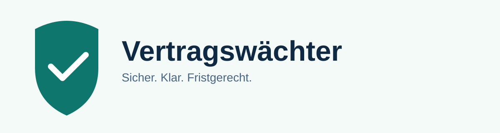
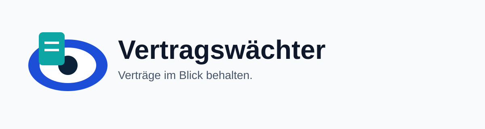
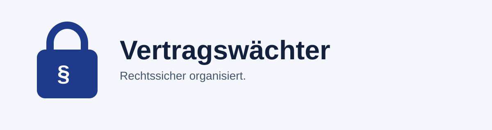
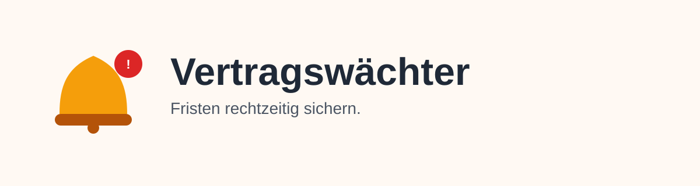
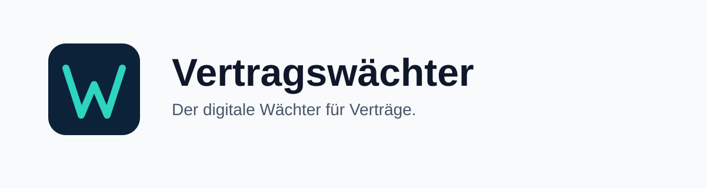
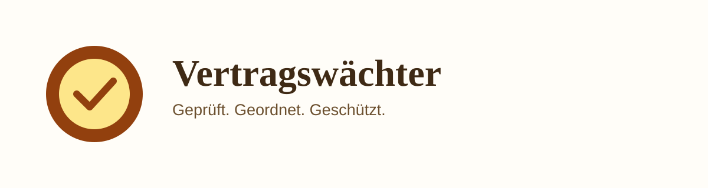
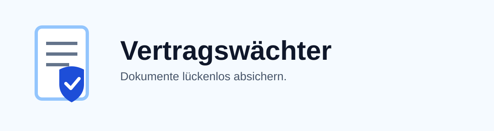
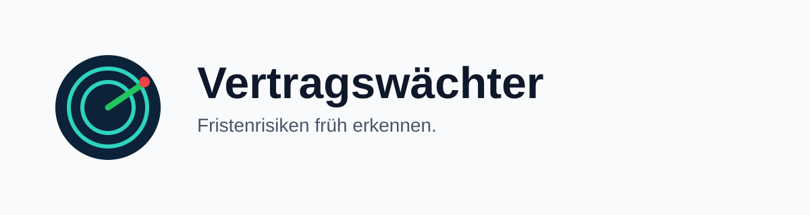
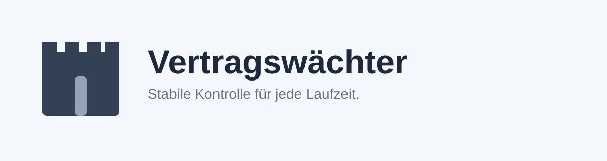
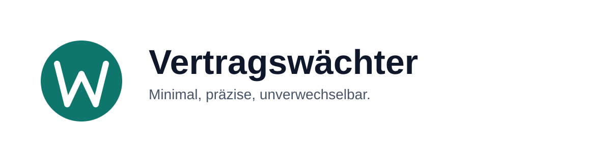

Direkter Vergleich aller Varianten für Auswahl, Feedback und Finalisierung.
L1 Schild CheckVertrauen / Sicherheit

L2 Auge DokumentMonitoring / Transparenz

L3 Schloss ParagraphCompliance / Rechtsfokus

L4 Glocke FristErinnerung / Alarm

L5 Monogramm VWModern / App-Icon

L6 Siegel StempelPremium / Traditionsvertrauen

L7 Dokument SchildFeature-nah / Produktklarheit

L8 Radar AlarmProaktiv / Frühwarnsystem

L9 Burg ZinneStabilität / Schutz

L10 Minimal WReduziert / Skalierbar
